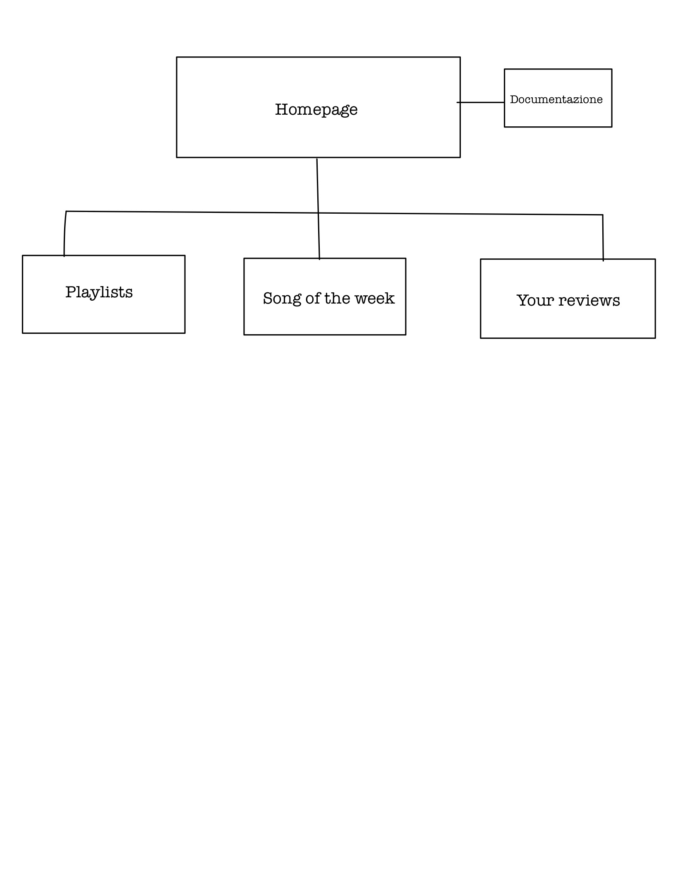

Il nostro sito vuole creare una community cercando di unire il maggior numero di utenti possibili e permettendo loro di esprimere le proprie opinioni su un determinato artista, album o un qualsiasi argomento relativo alla musica. Ci siamo focalizzate principalmente sui giovani in quanto risulta essere la fascia più propensa all’utilizzo di piattaforme e siti web per ascoltare la musica (così come i dati ci hanno poi confermato dopo la divulgazione del sito), ma esso è aperto a qualsiasi fascia di età. Il nostro valore aggiunto rispetto ad altri siti sono la personalizzazione molto più stretta delle playlist e soprattutto la possibilità di permettere agli utenti di formare legami, sia con noi che tra di loro.
1.1 Obiettivi
Il sito vuole proporre un’idea diversa di ascoltare musica, vogliamo cercare di trasmettere l’idea che non si è mai soli mentre lo si fa, ma un filo invisibile ci collega ad altri utenti che probabilmente hanno gli stessi gusti. Inoltre, grazie alla possibilità di lasciare recensioni e proporre canzoni da inserire nelle playlist, gli utenti hanno l’opportunità di stravolgere il proprio punto di vista su alcuni artisti, album, generi musicali, ecc.
1.2 Target utente
Il sito è aperto a chiunque in quanto abbiamo tentato di renderlo accessibile al maggior numero di persone possibili. Una piattaforma di questo tipo è comunque prevalentemente utilizzata da un pubblico di giovani e giovani adulti.
1.3 Competitors
Come minimo comun denominatore per la valutazione dei competitor abbiamo scelto siti che offrono la presenza di playlist create da essi. A tal proposito abbiamo individuato principalmente 2 maggiori competitor:
-Spotify= Spotify è una delle piattaforme di streaming più utilizzate e l’interfaccia grafica è molto semplice da utilizzare. Il problema che abbiamo rilevato in spotify è che le playlist già create dall’algoritmo molte volte risultano impersonali e contengono canzoni non completamente inerenti al titolo della playlist oppure canzoni che l’utente non ascolterebbe genericamente. Inoltre, nel caso in cui l’utente non avesse acquistato la versione Spotify Premium, dal cellulare non potrà scegliere la canzone che desidera ascoltare, ma sarà la piattaforma a sceglierne altre per lui prima di permettergli di ascoltare quella prescelta.
- Apple Music= a nostro avviso questa piattaforma non è così semplice e intuitiva da utilizzare. è un peccato, in quanto la grafica in sé la riteniamo molto pulita e lineare. A differenza del primo competitor, questa piattaforma è totalmente a pagamento, perciò a volte non è accessibile a tutti. Per Apple Music abbiamo riscontrato lo stesso problema dell’impersonalità delle playlist.
Infine, in entrambe le piattaforme le playlist create automaticamente non possono essere modificate in alcun modo sotto richiesta degli utenti.
2.1 Architettura del sito
Immagine 1 - Mappa del sito web
2.2 Wireframe
Immagine 2 - Wireframe homepage
Immagine 3 - Wireframe playlists
Immagine 4 - Wireframe song of the week
Immagine 5 - Wireframe your reviews
2.3 Look and feel
Per quanto riguarda la scelta della palette di colori abbiamo pensato di utilizzare colori molto neutri in modo tale da non indisporre l’utente. La nostra scelta è stata quindi un contrasto tra nero e beige (#fdecda), la scelta del rosa (#ffc0cb) è derivata dal fatto che volevamo un colore che risaltasse sulla pagina e riprendesse il colore del logo; l’abbiamo scelto sempre in una tonalità tenue Il posizionamento degli elementi della pagina è stato scelto con una logica di facilitazione dell’esperienza degli utenti e cercando di non sopraffarli con troppe informazioni ed effetti grafici. Il design è molto minimalista e favorisce un utilizzo intuitivo di tutti i suoi elementi, l’accoppiamento del font serif “Yeseva One” e del font sans serif “Josefin Sans” è stato scelto in quanto a nostro parere rendono la parte testuale facilmente leggibile. L’organizzazione della disposizione degli elementi all’interno della pagina è stata organizzata coerentemente all’idea dell’usabilità semplice che ha guidato questo progetto. Le immagini presenti sul sito, fatta eccezione per il logo e la scritta “Moodlist” che sono state disegnate da noi, sono state interamente create con l’ausilio di Canva.
2.4 Linguaggi e strumenti
Noi abbiamo creato il sito utilizzando il linguaggio html e css. Inoltre, abbiamo preso alcuni elementi da Bootstrap, mentre le copertine delle playlists, le slide del carousel e delle card sono state create con Canva. Le icone sono state prese da Fontawesome e Bandieredelmondo.it; per i font abbiamo utilizzato Google Fonts. Per la scritta “Moodlist” è stato utilizzato Paint, mentre per il logo abbiamo utilizzato ibispaint disegnadolo tutto a mano. Per la pubblicazione del sito è stato utilizzato GitHub. Come strumento di scrittura abbiamo utilizzato Sublime Text 2. Per le rilevazioni di dati ci siamo affidate a Google Analytics
3.1 Background
Avendo osservato e utilizzato i siti competitor siamo giunte alla conclusione che essi, per quanto in continuo aggiornamento, non offrono la personalizzazione necessaria che un utente richiede al fine di ascoltare musica a lui affine. Inoltre, nonostante l’enorme numero di abbonati e utenti di cui dispongono, non permettono la creazione di una community che metta al centro la persona e che possa permettere di comunicare e influenzarsi a vicenda.
3.2 Obiettivi comunicativi
L’obiettivo principale è quello di creare un sito in cui le playlist all’interno non sono create da algoritmi ma dai gusti personali delle creatrici con l’aiuto e l’interazione degli utenti. Ovviamente all’inizio le playlist seguono i nostri gusti, ma con il tempo e la creazione di legami con gli utenti sicuramente saranno molto più varie e personalizzate.
3.3 Target audience e messaggio
Come detto in precedenza, il nostro target non è ben definito in quanto il sito è aperto e adatto a tutti. Dai dati che abbiamo raccolto tramite anche l’utilizzo di Google Analytics abbiamo scoperto che il nostro sito ha raggiunto molte persone di età inferiore ai 40 anni. Questi gruppi vengono facilmente raggiunti tramite i canali social e hanno già esperienza con queste nuove modalità di streaming che rientrano nella loro quotidianità. Il messaggio che ci stiamo impegnando a trasmettere è che la musica è un potente legante e ,utilizzando il nostro sito ed entrando a far parte della nostra community, sarà possibile discutere ed esprimere le proprie opinioni in maniera totalmente libera.
3.4 Promozione
Noi abbiamo creato profili social su Twitter, Tiktok e Instagram in cui abbiamo postato quasi regolarmente e cercando di interagire il più possibile con i nostri utenti con anche contenuti interattivi (storie, song of the week ecc.).
3.5 Valutazione dei risultati
All’inizio del progetto ci eravamo prefissate di ottenere:
-100 visualizzazioni su Tiktok
-20 follower su instagram e almeno 10 like ai post
-100 visite sul sito e 300 conteggio eventi
Ad oggi 19/05/2022 abbiamo superato con successo tutti questi obiettivi
Immagine 6 - Risultati Analytics numero di utenti
Immagine 7 - Risultati Analytics conteggio eventi
Immagine 8 - Risultati follower Instagram
(Non abbiamo potuto inserire il risultato dei like in quanto si leggeva il nome della persona e per privacy non lo abbiamo inserito)